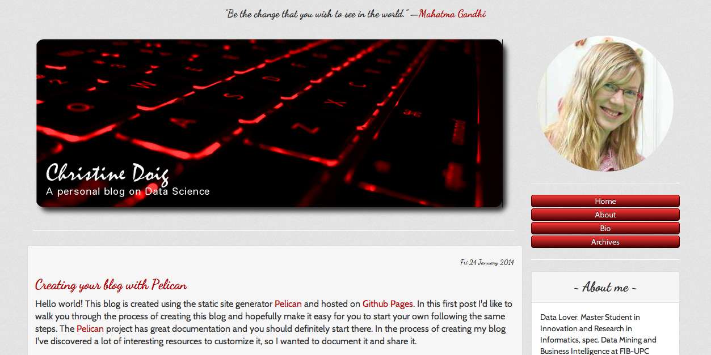

Christine Doig
Data Science. Python. R. Open Source.
Recent blog posts
Fri 24 January 2014
Creating your blog with Pelican
[UPDATE] Disclaimer: I wrote this blog post in my first pelican blog, which used a different theme: "pelican-bootstrap3-lovers". The current design is new. When the article makes references to the design of "this blog", it's actually referring to the previous one, which looked like this:

Since this blog post ...
Talks
Introduction to Conda and other Continuum Open Source projects
PyBCN Meetup, Barcelona, Spain
Thu 20 November 2014